お申込み
お申込みは以下Googleフォームにて。お支払いは事前振込またはPayPayとなります。
会場の詳細住所は、入金確認後にご案内します。アレルギーや苦手な食材は、申込フォームにご記入ください。
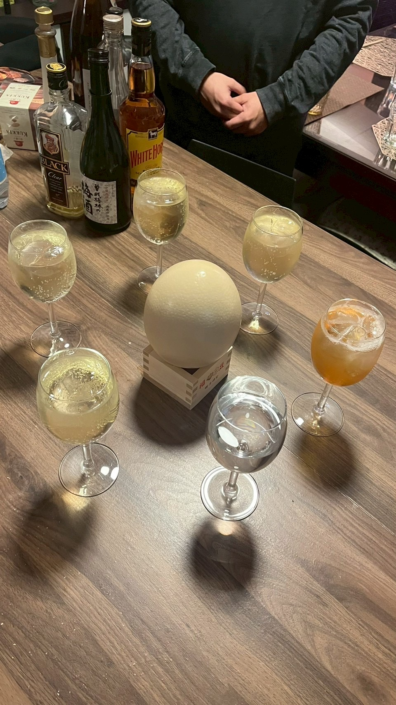
前回、大好評だった「ダチョウの会」を今年も開催します。料理は今回もぷるにぃ。ダチョウ肉の食べ比べに、みんなで殻を割って作る大きな目玉焼き。日本酒に合わせて、鮨まさや大将もおまかせ握りを3貫握ります。
ダチョウ肉は、日本ではまだ生産者の少ない希少な赤身肉です。牛肉に似た見た目で、やわらかく、クセは控えめ。低脂肪・低カロリーで、鉄分を含むことでも知られています。
ダチョウ卵は、鶏卵約25個分。厚い殻をみんなで割り、その場で目玉焼きにします。日本酒は2種。美濃焼のうつわで味わいます。
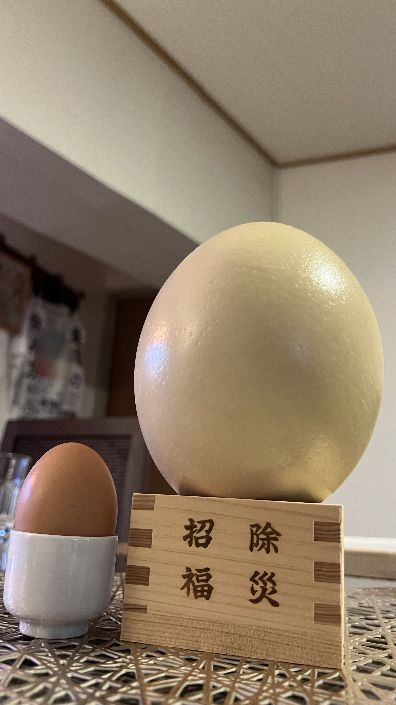
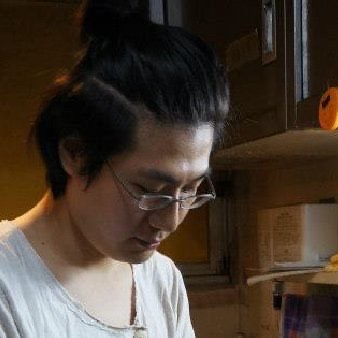
ゲスト料理人
おいしい たのしい ぷるにぃ
デザイン , たべもの , 図書館 , 百の職業をもつものといわれています。 さすらいの料理人として、都内を中心に全国どこでも出張出店、ダチョウやジビエをはじめとしたオルタナ食材の伝導やレシピ開発、奈良のたべごとあおにめしを通じた奈良の食の地位向上など。 2024年より、広尾の図書館「妄想図書室」 の設立運営に参画。デザインしたり本棚食堂したり広尾の人たちとあそんだり。おいしいとたのしいのあいだのことにコミットします。おいしいやたのしいで要解決課題や事業の交通整理が必要な方はお気軽に話しかけてください。
料理と器
今回、陶芸家の加藤 裕さんが岐阜からはるばる参加！料理の一部を彼の作ったうつわでご提供します。どんなうつわかは当日のお楽しみ。
陶芸歴23年、陶芸と出会って36年。人間国宝・加藤卓男先生に師事し、幸兵衛窯で7年間修行。東海伝統工芸展 東濃信用金庫賞を受賞し、公募展には15回入選。展示・イベントには30回以上出展しています。
コンセプトは『うつわで繋がる豊かな心』。地元・美濃の土と、自ら調合した釉薬でオリジナルの色を表現しています。
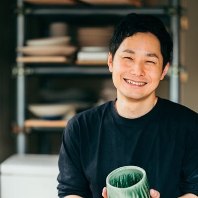
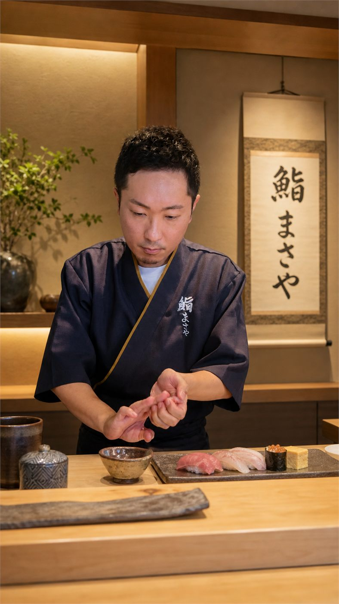
共催・おまかせ握り担当
13年間の会社員生活を経て、30代後半に未経験から鮨職人へ。わずか数ヶ月の修業ながら会員制鮨屋の大将に抜擢。独立後は紹介制の鮨会「鮨まさや」を主宰し、鮨を通じて分かち合い、ご縁がつながる場をつくっています。
当日は、その日の日本酒に合わせたおまかせ握りを3貫、丁寧に握らせていただきます。
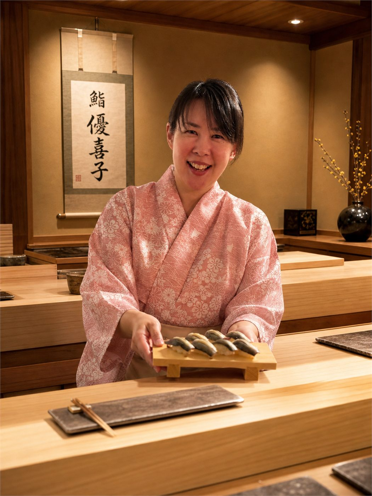
主催・会場提供
「一生、美味しいを楽しむ」をコンセプトに、健康的な体づくりをサポートするボディケアセラピストとして「優(You)BASE 原宿サロン」を運営。
その傍ら、「酒縁の会」コミュニティを主宰。人と人がつながる“場づくり女将”として、鮨や日本酒、料理を囲む会などを開催し、この1年間で700名以上の方に足を運んでいただきました。
会で大切にしているのは、皆さまに「お裾分けの一品」をお持ちいただくこと。
それぞれの「美味しい」を分かち合うことで自然と会話が生まれ、お互いを知っていく。
そんな時間の中から、素敵なご縁が生まれる瞬間が何よりも嬉しいです。
写真は前回開催時の料理です。
今回のメニューとは異なります。
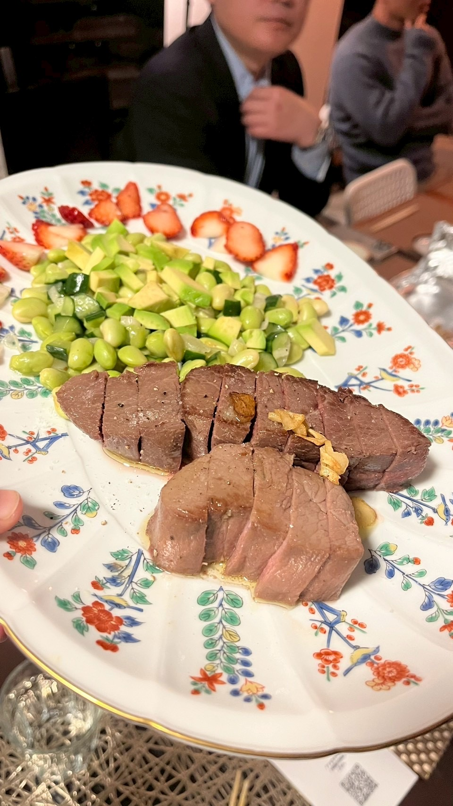
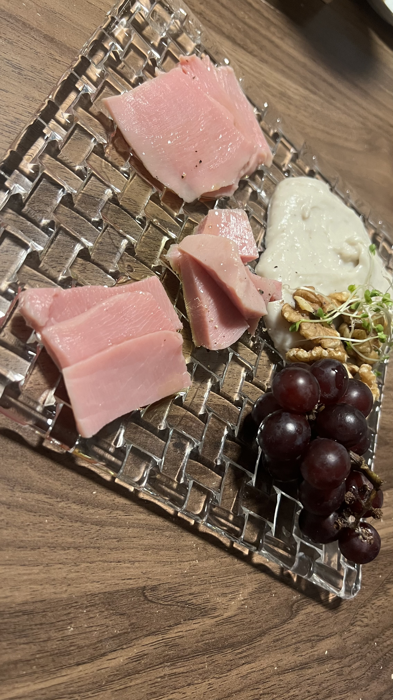
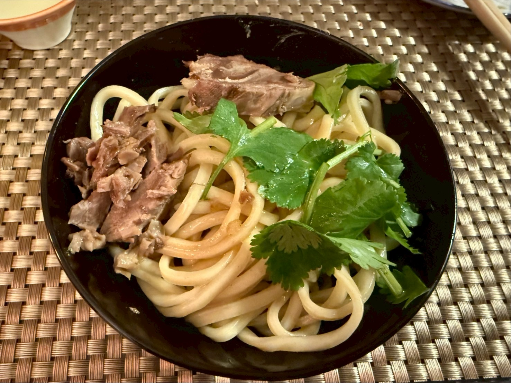
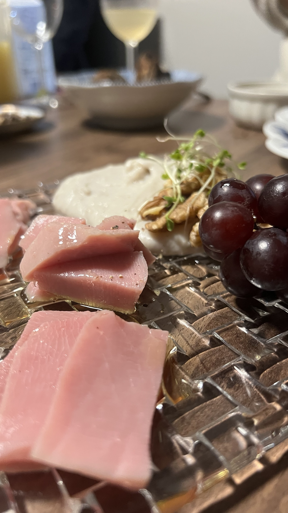
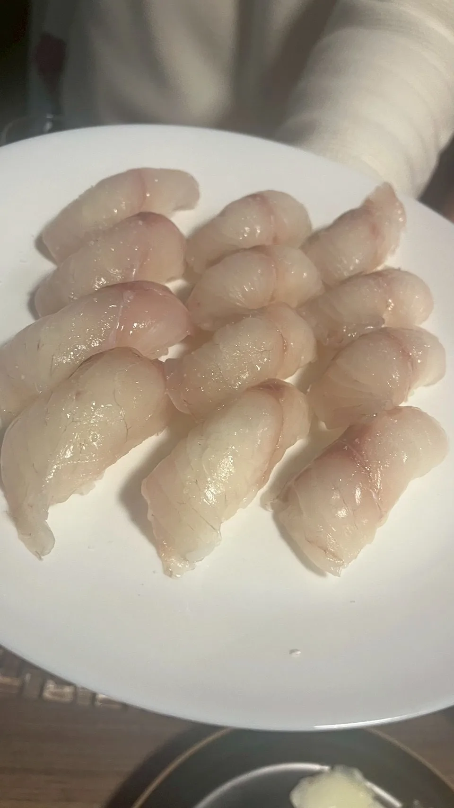
お申込みは以下Googleフォームにて。お支払いは事前振込またはPayPayとなります。
会場の詳細住所は、入金確認後にご案内します。アレルギーや苦手な食材は、申込フォームにご記入ください。